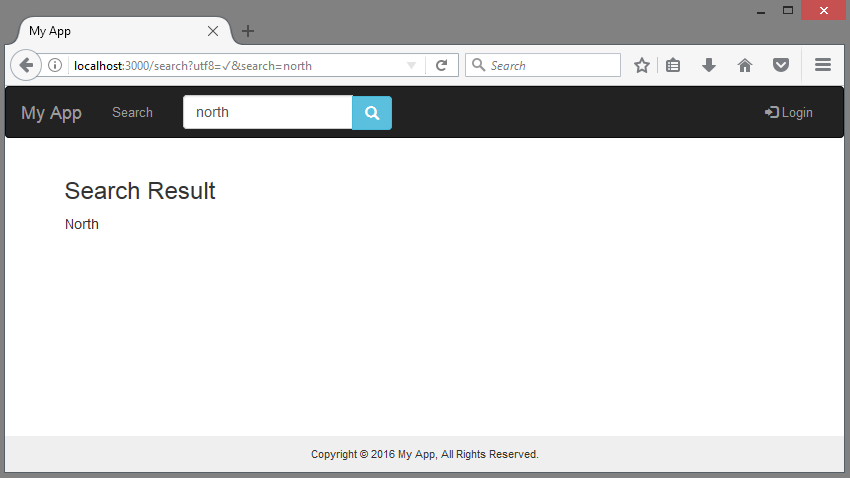

Last modified: Thu Aug 16 2018 22:49:02 GMT+0800 (Malay Peninsula Standard Time)
Chapter 4. Search Feature
The example used in this chapter is based on the previous Chapter that I have. However, you can always alter my example and fit into your own application easily. In my opinion, a well designed website should contain a feature that allow users to search through the entire database. In this chapter, we are going to start with searching on one table. Then, we expand our feature to ensure that our search bar is able to search through multiple tables.
This chapter will contain a lot of SQL related material. You may use w3schools SQL Tutorial as your side reference. If you are new to SQL, I would recommend you to work with a person that has some SQL knowledge. Everything will make no sense if you jump in right away. Of course, I will try my best to explain.
The example in this chapter is a minimal working example. You can always expand the search feature based on your need.
4.1 Create a page for Search
Let’s begin by adding creating a search page and add a search bar. I will use a controller that I have created, pages_controller.rb. The page will be used to return a list of search result. You can use any of the controller you have, or create one. To create one, follow the instruction in Table 4.1.1.
Table 4.1.1: Code to add to controler
#MyApp/app/controllers/pages_controller.rb
def search
end
In my app/view/pages, I created a file named search.html.erb.
Table 4.1.2: File to create
#Path
MyApp/app/view/pages/
#File to create
search.html.erb
In my routes.rb file located in app/config, I added the code into the file. /search is the route to your search page and pages#search means your search.html.erb is located in the view folder named pages
Table 4.1.3: Code to add to routes.rb
#MyApp/app/config/routes.rb
get '/search' => 'pages#search', :as => 'search_page'
Now, you should be able to see an empty page is being rendered when you navigate to localhost:3000/search. Figure 4.1.1 shows an empty page.
Figure 4.1.1: An empty search page
4.2 Create a Search Bar
Before reading this section, make sure that you have a page for search result. Refer to previous section if you do not have one. After a page is successfully created, let’s add a search bar. Since I am trying to make a search bar that I can search through my entire application, I decided to put the search bar in my navigation bar. Add the code in Table 4.2.1 to your header file.
If you do not have a _header.html.erb file, please follow the instruction in Part IV, Chapter 1.4 of the tutorial. You may also choose to have the code in application.html.erb. Please ensure that you are putting the code at the correct.
Table 4.2.1: Code to add to header
#MyApp/app/views/_header.html.erb
<%= form_tag(search_page_path, :method => "get",
class: 'navbar-form navbar-left') do %>
<div class="input-group">
<%= search_field_tag :search, params[:search], placeholder: "Search", class: "form-control" %>
<div class="input-group-btn">
<%= button_tag "", :class => 'btn btn-info glyphicon glyphicon-search',:name => nil%>
</div>
</div>
<% end %>
You may have to refer to the Figure 4.2.1 for the correct formating. The path search_page_path is based on your routing that you defined in your route.rb. You have to make sure that search_page exists in your route.rb. The parameter that you are going to pass from view to controller is params[:search].
Figure 4.2.1: Syntax formatting for Search Bar
Figure 4.2.2 show a search bar is successfully added to my header. If you are unable to achieve this step, check your routing and header file. Make sure that you place your search bar code at the correct spot.
Figure 4.2.2: Search Bar is added successfully
If your search bar looks different from my search bar or it does not have the styling, you are missing Bootstrap framework. Refer to Part IV, Chapter 1 on how to install Bootstrap framework.
4.3 Adding a simple search feature
This section is written based on section earlier. Please ensure that you have a search result page and a search bar before proceeding to this section. At this stage, we have an empty search result page and a search bar. Let’s add some code to turn the search bar into a working search bar.
In my pages_controller.rb, I added a few lines of code as shown in Table 4.3.1 to ensure that the search feature redirect to the root page if the search field is empty. You may change it to any path based on your preference.
Table 4.3.1: Code to add to Controller
#MyApp/app/controllers/pages_controller.rb
def search
if params[:search].blank?
redirect_to(root_path, alert: "Empty field!") and return
else
end
end
Figure 4.3.1 shows the error I received when I am trying to search with empty string. You may not the exact same result depending on your design.
Figure 4.3.1: Result of the modification
Now, let’s expand the feature by adding more code as shown in Table 4.3.2 to make sure the search starts to search the Model we have. In my pages_controller.rb, I added a few lines of code for search.
Table 4.3.2: Code to add to Controller
#MyApp/app/controllers/pages_controller.rb
#add the code to the else part
def search
if params[:search].blank?
redirect_to(root_path, alert: "Empty field!") and return
else
@parameter = params[:search].downcase
@results = Store.all.where("lower(name) LIKE :search", search: @parameter)
end
end
Refer to the Figure 4.3.2 for accurate syntax formatting.
Figure 4.3.2: Syntax formatting for Controller
Explanation of code in Table 4.3.2:
params[:search]is passing the variable :search from my search bar..downcasewill lower all the string into lowercase characters.- Store (capital letter S) means select stores table
.allmeans select everything.- To filter the result, we use
.where(). In this case, we are searching for the column name. - The word
LIKE(in capital letters) means it is trying to match the variable :search with search: In this case,search:is assigned to @parameter, where@parameteris the input by user to the search bar where we set to lowercase initially.
SQL Equivalent of the code in Line 6 from Figure 4.3.2 is:
SELECT * FROM Stores WHERE lower(name) LIKE “SEARCH”
Explanation of code in above:
Storesis the table nameNameis the column nameSEARCHis the parameter we enteredLower()will set the column Name to lowercase before searching is doneLIKEis an operator inSQL, read more here.
In my search.html.erb, add the code in Table 4.3.3.
Table 4.3.3: Code to add to View
#MyApp/app/views/pages/search.html.erb
<h3>Search Result</h3>
<% @results.each do |result| %>
<%= result.name %><br>
<% end %>
Figure 4.3.3 shows that we are able to search the word “north” that is available in the database. At the current stage, our search is able to handle the exact word only. You have to add your modify the code in the view to print each of the @results.

Figure 4.3.3: Result of Search
4.4 How to Query in SQLiteStudio
In the previous section, we discussed how to create a search feature. How do we know whether we are getting the correct result? To verify, we can use SQLiteStudio to query our data in SQL.
SQL is a language for database. If you are unfamiliar with SQL, you can obtain more information from w3school website. The default Ruby code that we use in the controller will not work. You have to translate your Ruby code to SQL manually.
SQL Equivalent of the screenshot of the result in previous section is:
SELECT * FROM Stores WHERE Lower(Name) LIKE “north”*
Explanation of code in above:
SELECTsimply means select*means everything as in the entire rowFROMmeans from which tableStoresrefer to the table that we are searching fromLowermeans lower case the column namedNameNamerefers to the column that we are searching within the scopeLIKEis SQL operator- “north” is the scope that we want it to query (or search)
We can manually input the SQL query in our SQLiteStudio. The return result as shown in the Figure 4.3.3 will match the result in Figure 4.4.1, providing that you have the same database. If you are unable to query, please ensure that your syntax are right.
Figure 4.4.1: Step by step operation to query in SQLiteStudio
4.5 Wildcards for LIKE Operator
From previous section, we used SQL LIKE operator to query. There are two symbols that we can use long with the LIKE operator:
% - percent, represents zero, one, or multiple characters
_ - underscore, represents a single character
Note: MSSQL (Microsoft SQL) is using ? (question mark) instead of _ (underscore) to represent a character
By using the two symbols above, we are able to narrow down our search or broaden our search. For example, we can use __WORD (two underscores) to query the column that begin with any two characters and ends with the parameter WORD. In the other hand, we can use %WORD% (percent) to query any column that contains the WORD in between the data in the column. For detailed explanation, please refer to w3school.
Let’s modify the code to in our controller ensure that we are able to search all the words with matching characters. In the other word, we are using the percent symbol.
Add the symbols “%#{some_random_pararameter}%” (with parenthesis) to our @paramter in the search to enable search any word that contain the characters. The modified version of the code is attached below.
@results = Store.all.where("lower(name) LIKE :search", search: "%#{@parameter}%")
Figure 4.5.1 shows the result of the modification and the correct syntax formatting.
Figure 4.5.1: Result of the modification
Now, return to our search bar and type one or two characters. The search bar is able to search any name in the field with the character in the search field. Figure 4.5.2 shows our search bar is able to search any result based on the single character we input.
Figure 4.5.2: Result of the search operation
SQL Equivalent of the operation in Figure 4.5.2 is:
SELECT * FROM Stores WHERE Lower(Name) LIKE “%o%”
Figure 4.5.3 shows SQLiteStudio returns the same result as our search feature in Figure 4.5.2. If you are unable to query, please make sure that your syntax is right.
Figure 4.5.3: Query in SQLiteStudio
4.6 Search across Multiple Tables
This section is written based on section earlier. Please ensure that you have followed the instruction in the previous section to have a working search feature before trying to add this feature. Also, this section require minimal understanding with SQL.
In order to search across multiple tables, we have to clean up the code and create our own method in the model. This will make our code so much cleaner and easier to understand.
In this example, I am my cars rental example that I created from Part V, Chapter 2. Just to recap, I have two models, Store and Car. Each of the car is belong to a store. Each store has many cars. If you are unfamiliar with the structure of the two tables, please refer to chapter.
In my controller, pages_controller.rb, I removed the original @result and replaced it with the one below and commented out the @parameter we created earlier.
@results = Car.joins(:store).search(params[:search]).order("stores.name DESC")
Refer to the Figure 4.6.1 for correct syntax formatting.

Figure 4.6.1: Result of the modification in Controller
Explanation of code in Figure 4.6.1:
Caris the model namejoins(:store)joins theCartable andStoretable by using inner join.
If you are unable to get it to work, be sure you check the relationship between two tables. Make sure that you have added correct relationship (e.g. has_many, belongs_to).
SQL equivalent of the above query is:
SELECT cars.* FROM cars
INNER JOIN cars on cars.store_id = cars.id
...
ORDER BY stores.name DESC
The rest of the query (...) is based on the search method we will create below.
In my car model, car.rb, I added the following code.
Table 4.6.1: Code to add to Model
#MyApp/app/models/car.rb
def self.search(search)
where("lower(stores.name) LIKE :search OR lower(cars.name) LIKE :search", search: "%#{search.downcase}%").uniq
end
Explanation of code in Table 4.6.1:
ORmeans we are searching between two tables. If any of the result shows up in any of the table, the result will be returned.
SQL equivalent of the above method is:
...
WHERE lower(stores.name) OR lower(cars.name)
LIKE “%SEARCH_TEXT%”
...
Explanation of SQL code in above:
stores.nameandcars.nameare the two columns that I am trying to search within.uniqwill ensure that there is no duplicate (done at the last step of query)SEARCH_TEXTis a parameter is what we are going to search
The complete SQL Query with the method is as below:
SELECT DISTINCT cars.* FROM cars
INNER JOIN stores on cars.store_id = cars.id
WHERE lower(stores.name) OR lower(cars.name)
LIKE “%SEARCH_TEXT%”
ORDER BY stores.name DESC
In my view, I replaced the code with the slightly modified code as shown in Table 4.6.2. You can always add a link to the specific page as each result contain the store and car id.
Table 4.6.2: Code to add to View
#MyApp/app/views/pages/search.html.erb
#Code to remove
<h3>Search Result</h3>
<% @results.each do |result| %>
<%= result.name %><br>
<% end %>
#Code to add
<h3>Search Result</h3>
<% @results.each do |result| %>
<%= result.store.name %> <%= result.name %><br>
<% end %>
Now, by returning to your search page, we are able to search any values that show up in any of the database table. Figure 4.6.2 shows the final result of the search feature.
Figure 4.6.2: Result of the Search
By querying the result in SQLiteStudio as shown in Figure 4.6.3, we obtained the same result.
Figure 4.6.3: Result of the query in SQLiteStudio
4.7 Testing and Verification
This section is series of previous sections. In this section, we are going to test whether our search bar actually work as it should. To begin, open your SQLiteStudio and check both of the tables that you have. In my case, I have cars and stores table. The data contains in each table is shown below.
Figure 4.7.1 shows the data in my stores table.
Figure 4.7.1: Data in Store table
Figure 4.7.2 shows the data in my cars table.
Figure 4.7.2: Data in Car table
Since my cars table’s name field begin with A, I decided begin from there. In my search bar, I entered lowercase a. By default, SQL query is case sensitive. Lowercase and Uppercase letter are different. Since we have already downcase-ed our search result and table column result for query purpose, it should be able to return any result that contain the character a, no matter it is uppercase or lowercase.
Figure 4.7.3 shows that my output result is as expected.
Figure 4.7.3: Result of the search operation
Now, let’s search something that contain the value 1. From our database table, it should return two rows. Figure 4.7.4 shows that our search result is as expected.
Figure 4.7.4: Result of the search operation
Then, let’s search something that contain the value so. From our database table, it should return one rows. Figure 4.7.5 shows that our search result is as expected.
Figure 4.7.5: Result of the search operation
Finally, let’s search something that contain the string xo. From our database table, we know that it should not return anything. Figure 4.7.6 shows that our search result is as expected.
Figure 4.7.6: Result of the search operation